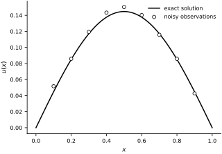
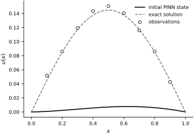
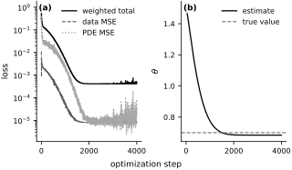
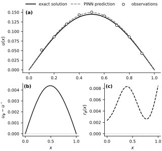

Recovering an Unknown Conductivity#
In the forward PINN example we assumed that the PDE coefficients were known and trained a neural network only for the state. In the inverse-problems chapter we reversed that viewpoint: the state is often only an intermediate quantity, and the real target is an unknown physical parameter hidden behind sparse observations. This example combines those two ideas.
We study a simple one-dimensional diffusion problem and use a PINN to learn both the solution \(u(x)\) and an unknown conductivity \(\theta > 0\) from noisy temperature measurements. The overall PINN formulation follows the original framework of Raissi et al. (2019), while the practical advice about scaling, optimization, and diagnostics is consistent with the recommendations in Wang et al. (2023).
The small example keeps the inverse-problem logic transparent.
The Inverse Problem#
We consider the boundary value problem
The conductivity \(\theta\) is unknown. Because the right-hand side does not depend on \(\theta\), the parameter controls the amplitude of the solution. This already turns the problem into a genuine inverse problem: we want to infer \(\theta\) from data.
For this toy example the exact solution is available:
We will use the exact solution only to generate synthetic observations. In a real experiment we would only have the sensor measurements. This is the same manufactured-solution strategy we used earlier in the forward PINN example: it gives us a controlled benchmark with a known answer.
Our observations are
We train a neural network \(u_\phi(x)\) together with a scalar parameter \(\theta_\phi\) by minimizing
where the residual is
The data term forces the network to explain the observations. The residual term forces it to explain them using the correct physics. This mirrors the parameter-to-observable viewpoint of the inverse-problems chapter: the hidden parameter is only useful if it produces the observed response through the governing equations.
true_theta = 0.7
noise_std = 3e-3
n_obs = 9
def source_term(x):
return jnp.sin(jnp.pi * x)
def exact_solution(x, theta=true_theta):
return jnp.sin(jnp.pi * x) / (theta * jnp.pi**2)
key = jr.PRNGKey(2)
key, noise_key = jr.split(key)
x_obs = jnp.linspace(0.1, 0.9, n_obs)
y_clean = exact_solution(x_obs)
y_obs = y_clean + noise_std * jr.normal(noise_key, x_obs.shape)
xs_plot = jnp.linspace(0.0, 1.0, 300)
This problem is already nondimensionalized on the unit interval, so the scaling pathologies from the forward PINN example are much milder here. That lets us focus on the inverse-problem mechanics: sparse noisy data, a trainable physical parameter, and physics-based regularization. The synthetic observations are shown in Fig. 53.
fig, ax = new_figure("full_standard")
ax.plot(
xs_plot, exact_solution(xs_plot), color="black", linestyle="-",
linewidth=1.5, label="exact solution"
)
ax.scatter(
x_obs, y_obs, s=24, facecolors="white", edgecolors="black",
linewidths=0.8, zorder=3, label="noisy observations"
)
ax.set(xlabel=r"$x$", ylabel=r"$u(x)$")
ax.legend(loc="upper right")
finalize_axes(ax)
plt.show()
{kind=link}

Fig. 53 Synthetic inverse-problem data. The solid curve is the exact solution \(u^\star(x;\theta_{\mathrm{true}})\) for \(\theta_{\mathrm{true}}=0.7\); open circles are the nine observations corrupted by independent Gaussian noise with standard deviation \(3\times 10^{-3}\).#
The PINN Model#
We need a representation for the state and for the unknown coefficient.
For the state, we use the same idea as in the forward PINN example and encode the Dirichlet boundary conditions directly into the ansatz:
This guarantees \(u_\phi(0)=u_\phi(1)=0\) for every choice of network weights. The optimizer never has to “learn” the boundary conditions.
For the conductivity, positivity matters. We therefore optimize an unconstrained scalar \(\eta\) and define
This is a common inverse-problem trick: optimize in a transformed coordinate system where the physical constraint is automatic.
class InversePINN(eqx.Module):
mlp: eqx.nn.MLP
log_theta: jax.Array
def __init__(self, key, width_size=64, depth=3, theta_init=1.5):
self.mlp = eqx.nn.MLP(1, 1, width_size, depth, jax.nn.tanh, key=key)
self.log_theta = jnp.array(jnp.log(theta_init))
def __call__(self, x):
x = jnp.asarray(x)
return x * (1.0 - x) * self.mlp(jnp.array([x]))[0]
def theta(model):
return jnp.exp(model.log_theta)
model_key, train_key = jr.split(key)
model = InversePINN(model_key)
print(f"Initial conductivity guess: {theta(model):.3f}")
Initial conductivity guess: 1.500
fig, ax = new_figure("full_standard")
ax.plot(
xs_plot, vmap(model)(xs_plot), color="black", linestyle="-",
linewidth=1.5, label="initial PINN state"
)
ax.plot(
xs_plot, exact_solution(xs_plot), color="0.45", linestyle="--",
linewidth=1.3, label="exact solution"
)
ax.scatter(
x_obs, y_obs, s=24, facecolors="white", edgecolors="black",
linewidths=0.8, zorder=3, label="observations"
)
ax.set(xlabel=r"$x$", ylabel=r"$u(x)$")
ax.legend(loc="upper right")
finalize_axes(ax)
plt.show()
{kind=link}

Fig. 54 State represented by the inverse PINN before optimization. The solid curve is the initial network output, the dashed curve is the exact solution, and open circles are the observations. The factor \(x(1-x)\) enforces the two homogeneous boundary conditions.#
Loss Function and Automatic Differentiation#
The PDE residual needs a second derivative. Because the state is represented by a differentiable neural network, we can obtain this derivative by automatic differentiation:
In one spatial dimension this is easy to implement with nested calls to jax.grad. The result is a compact inverse solver in which the same computational graph supports the state, the physics residual, and the physical parameter.
u_x = grad(lambda x, model: model(x), argnums=0)
u_xx = grad(u_x, argnums=0)
def residual(model, x):
return -theta(model) * u_xx(x, model) - source_term(x)
def loss_terms(model, x_obs, y_obs, x_phys, lambda_data=50.0, lambda_pde=1.0):
pred_obs = vmap(model)(x_obs)
data_loss = jnp.mean((pred_obs - y_obs) ** 2)
residual_values = vmap(lambda x: residual(model, x))(x_phys)
pde_loss = jnp.mean(residual_values ** 2)
total_loss = lambda_data * data_loss + lambda_pde * pde_loss
return total_loss, (data_loss, pde_loss)
test_phys = jnp.linspace(0.0, 1.0, 16)
total_loss, (data_loss, pde_loss) = loss_terms(model, x_obs, y_obs, test_phys)
print(f"Initial total loss: {total_loss:.4f}")
print(f"Initial data loss: {data_loss:.4f}")
print(f"Initial PDE loss: {pde_loss:.4f}")
Initial total loss: 0.9412
Initial data loss: 0.0111
Initial PDE loss: 0.3880
Training#
We train the network weights and the conductivity simultaneously with Adam. At every iteration we resample collocation points uniformly from \((0,1)\) and evaluate the PDE residual there.
We use \(\lambda_\text{data}=50\) and \(\lambda_\text{PDE}=1\). The data weight is intentionally larger because the state is of order \(0.1\) while the source term is of order one, so for the same relative error the mean-squared data misfit is numerically much smaller than the mean-squared PDE residual. If we weighted the two terms equally from the start, the data would be too weak relative to the physics term and the optimizer would move more slowly toward the correct amplitude.
optimizer = optax.adam(1e-3)
opt_state = optimizer.init(eqx.filter(model, eqx.is_inexact_array))
@eqx.filter_jit
def make_step(model, opt_state, x_obs, y_obs, x_phys, lambda_data, lambda_pde):
(loss_value, aux), grads = eqx.filter_value_and_grad(loss_terms, has_aux=True)(
model, x_obs, y_obs, x_phys, lambda_data, lambda_pde
)
updates, opt_state = optimizer.update(grads, opt_state, model)
model = eqx.apply_updates(model, updates)
return model, opt_state, loss_value, aux
n_steps = 4000
n_phys = 128
lambda_data = 50.0
lambda_pde = 1.0
history = {
"loss": [],
"data_loss": [],
"pde_loss": [],
"theta": [],
}
for step in range(n_steps):
train_key, phys_key = jr.split(train_key)
x_phys = jr.uniform(phys_key, (n_phys,), minval=0.0, maxval=1.0)
model, opt_state, loss_value, aux = make_step(
model, opt_state, x_obs, y_obs, x_phys, lambda_data, lambda_pde
)
data_loss, pde_loss = aux
history["loss"].append(float(loss_value))
history["data_loss"].append(float(data_loss))
history["pde_loss"].append(float(pde_loss))
history["theta"].append(float(theta(model)))
if step % 500 == 0 or step == n_steps - 1:
print(
f"step={step:4d} "
f"loss={float(loss_value):.6f} "
f"data={float(data_loss):.6e} "
f"pde={float(pde_loss):.6e} "
f"theta={float(theta(model)):.4f}"
)
fig, axes = new_figure("full_landscape", ncols=2, sharex=True)
axes[0].semilogy(
history["loss"], color="black", linestyle="-",
linewidth=1.3, label="weighted total"
)
axes[0].semilogy(
history["data_loss"], color="0.35", linestyle="--",
linewidth=1.1, label="data MSE"
)
axes[0].semilogy(
history["pde_loss"], color="0.65", linestyle=":",
linewidth=1.3, label="PDE MSE"
)
axes[0].set_ylabel("loss")
axes[0].legend(loc="upper right")
axes[1].plot(
history["theta"], color="black", linestyle="-",
linewidth=1.3, label="estimate"
)
axes[1].axhline(
true_theta, color="0.45", linestyle="--",
linewidth=1.1, label="true value"
)
axes[1].set_ylabel(r"$\theta$")
axes[1].legend(loc="upper right")
fig.supxlabel("optimization step", fontsize=9)
label_panels(axes)
finalize_axes(axes)
plt.show()
{kind=link}

Fig. 55 Optimization histories. (a) The weighted total objective and its two unweighted mean-square components; the total objective uses \(\lambda_{\mathrm{data}}=50\) and \(\lambda_{\mathrm{PDE}}=1\). (b) The inferred conductivity and its true value.#
Evaluating the Trained Inverse PINN#
There are two things to check.
Does the learned state \(u_\phi(x)\) match the true solution over the whole domain, not just at the sensors?
Did the inferred conductivity converge to the correct value?
These are different questions. A flexible network can often interpolate a few data points. Recovering the correct physical parameter is harder because the PDE residual has to be small at the same time. The numerical summary follows, and the three diagnostic panels are collected in Fig. 56.
u_pred = vmap(model)(xs_plot)
u_true = exact_solution(xs_plot)
residual_plot = vmap(lambda x: residual(model, x))(xs_plot)
rel_l2 = jnp.linalg.norm(u_pred - u_true) / jnp.linalg.norm(u_true)
theta_error = abs(theta(model) - true_theta)
obs_rmse = jnp.sqrt(jnp.mean((vmap(model)(x_obs) - y_obs) ** 2))
print(f"Recovered conductivity: {theta(model):.4f}")
print(f"Absolute conductivity error: {theta_error:.4f}")
print(f"Relative L2 solution error: {rel_l2:.4f}")
print(f"Observation RMSE: {obs_rmse:.4f}")
fig = plt.figure(figsize=FIGURE_SIZES["full_tall"], constrained_layout=True)
panel = fig.subplot_mosaic(
[["state", "state"], ["error", "residual"]],
gridspec_kw={"height_ratios": [1.2, 1.0]},
)
state_ax = panel["state"]
error_ax = panel["error"]
residual_ax = panel["residual"]
state_ax.plot(
xs_plot, u_true, color="black", linestyle="-",
linewidth=1.5, label="exact solution"
)
state_ax.plot(
xs_plot, u_pred, color="0.45", linestyle="--",
linewidth=1.3, label="PINN prediction"
)
state_ax.scatter(
x_obs, y_obs, s=22, facecolors="white", edgecolors="black",
linewidths=0.8, zorder=3, label="observations"
)
state_ax.set_ylabel(r"$u(x)$")
state_ax.legend(
loc="lower center", bbox_to_anchor=(0.5, 1.02), ncol=3,
borderaxespad=0.0, columnspacing=0.9, handlelength=2.4
)
error_ax.plot(xs_plot, u_pred - u_true, color="black", linewidth=1.3)
error_ax.axhline(0.0, color="0.60", linestyle=":", linewidth=1.0)
error_ax.set(xlabel=r"$x$", ylabel=r"$u_\phi-u^\star$")
residual_ax.plot(
xs_plot, residual_plot, color="black", linestyle="--", linewidth=1.3
)
residual_ax.axhline(0.0, color="0.60", linestyle=":", linewidth=1.0)
residual_ax.set(xlabel=r"$x$", ylabel=r"$r_\phi(x)$")
axes = [state_ax, error_ax, residual_ax]
label_panels(axes)
finalize_axes(axes)
plt.show()
Recovered conductivity: 0.6843
Absolute conductivity error: 0.0157
Relative L2 solution error: 0.0304
Observation RMSE: 0.0030
{kind=link}

Fig. 56 Diagnostics for the trained inverse PINN. (a) Exact and inferred states together with the observations. (b) Pointwise state error \(u_\phi-u^\star\). (c) PDE residual \(r_\phi=-\theta_\phi u_\phi''-\sin(\pi x)\).#
The result is encouraging for the right reason. The network is not just fitting the sensor values. It is finding a state whose curvature is consistent with the PDE and a conductivity whose value makes the residual small across the whole interval.
This is exactly why PINNs can be useful for inverse problems. The data may be sparse, but the PDE provides a strong structural prior. On the other hand, the approach has a limitation: if the loss weights, the collocation set, or the optimization budget are poor, the inferred parameter can drift even when the pointwise fit looks reasonable.
Notice one more subtle point. The conductivity \(\theta\) only appears in the PDE residual, not in the data term. If we removed the physics term, the network could still interpolate the observations but the parameter would become unidentifiable. Inverse PINNs work only when the physics term really constrains the unknown quantity of interest.
Exercises#
Increase
n_stepsfrom4000to8000. How much does the conductivity estimate improve, and does the solution error decrease at the same rate?Increase the number of observations
n_obs. Does the recovered conductivity become more accurate? At what point do extra observations stop helping much?Increase the number of collocation points
n_physfrom128to512. Does the residual plot become flatter? Does the parameter estimate stabilize earlier?Change the loss weights
lambda_dataandlambda_pde. Can you make the network fit the data very well while still recovering the wrong conductivity?Increase
noise_stdand rerun the notebook. When does the inverse problem become noticeably harder? How does the PINN use the PDE to resist overfitting the noise?Replace the source term with a higher-frequency forcing, for example
sin(3 * pi * x). Does the same architecture still train reliably, or do you start to see the spectral-bias issues discussed in the spectral-bias section?